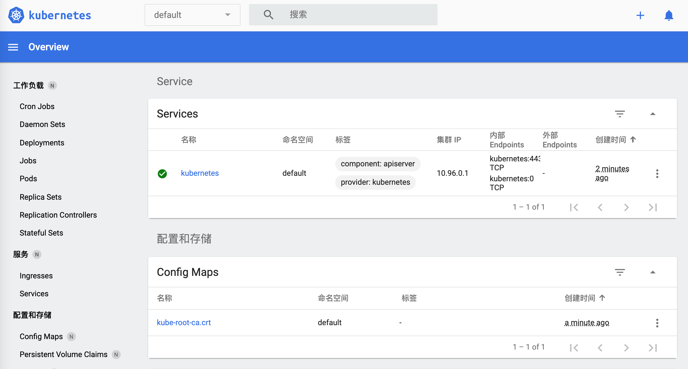
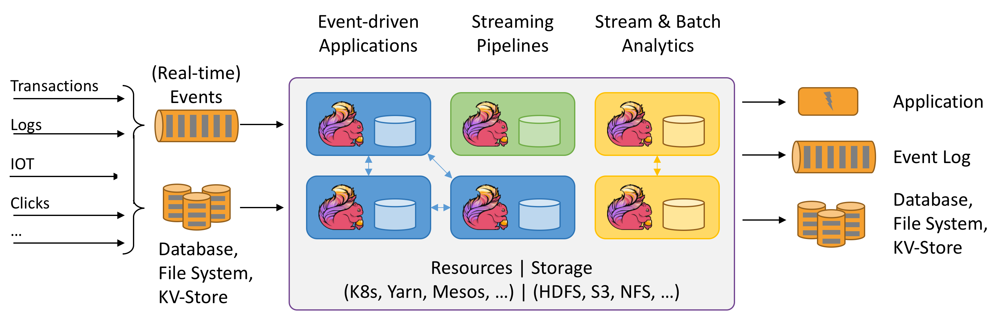

Introducción a la Computación en la Nube y el Big Data | Original, traducido por IA
Esta lección cubre los siguientes temas:
- Spark
- Hadoop
- Kubernetes
- Docker
- Flink
- MongoDB
Cuando se habla de computación en la nube, parece que no se puede evitar mencionar muchas herramientas: Hadoop, Hive, Hbase, ZooKeeper, Docker, Kubernetes, Spark, Kafka, MongoDB, Flink, Druid, Presto, Kylin, Elastic Search. ¿Has oÁdo hablar de todas ellas? Algunas de estas herramientas las encontré en las descripciones de puestos como ingeniero de big data e ingeniero backend distribuido. Estos son puestos bien remunerados. Intentemos instalarlos todos y jugar un poco con ellos.
Primer vistazo a Spark
El sitio web oficial dice que Spark es un motor de análisis utilizado para procesar datos a gran escala. Spark es esencialmente un conjunto de bibliotecas. Parece que no está dividido en servidor y cliente como Redis. Spark se utiliza únicamente en el lado del cliente. Descargué la última versión del sitio web, spark-3.1.1-bin-hadoop3.2.tar.
$ tree . -L 1
.
├── LICENSE
├── NOTICE
├── R
├── README.md
├── RELEASE
├── bin
├── conf
├── data
├── examples
├── jars
├── kubernetes
├── licenses
├── python
├── sbin
└── yarn
11 directorios, 4 archivos
Parece ser una colección de bibliotecas de análisis escritas en varios lenguajes.
Al mismo tiempo, el sitio web oficial menciona que puedes instalar las dependencias directamente en Python. `pip install pyspark`
```shell
$ pip install pyspark
Collecting pyspark
Descargando pyspark-3.1.1.tar.gz (212.3 MB)
|████████████████████████████████| 212.3 MB 14 kB/s
Collecting py4j==0.10.9
Descargando py4j-0.10.9-py2.py3-none-any.whl (198 kB)
|████████████████████████████████| 198 kB 145 kB/s
Building wheels for collected packages: pyspark
Building wheel for pyspark (setup.py) ... done
Created wheel for pyspark: filename=pyspark-3.1.1-py2.py3-none-any.whl size=212767604 sha256=0b8079e82f3a5bcadad99179902d8c8ff9f8eccad928a469c11b97abdc960b72
Stored in directory: /Users/lzw/Library/Caches/pip/wheels/23/bf/e9/9f3500437422e2ab82246f25a51ee480a44d4efc6c27e50d33
Successfully built pyspark
Installing collected packages: py4j, pyspark
Successfully installed py4j-0.10.9 pyspark-3.1.1
Se ha instalado.
Esto se ve en el sitio web oficial, hay algunos ejemplos.
./bin/run-ejemplo SparkPi 10
Ah, resulta que puedes ejecutar el programa del paquete de instalación que acabas de descargar. Pero ocurrió un error.
$ ./bin/run-example SparkPi 10
21/03/11 00:06:15 WARN NativeCodeLoader: No se pudo cargar la biblioteca nativa de Hadoop para su plataforma... utilizando clases integradas de Java donde sea aplicable
21/03/11 00:06:16 INFO ResourceUtils: No se han configurado recursos personalizados para spark.driver.
21/03/11 00:06:16 WARN Utils: El servicio 'sparkDriver' no pudo vincularse a un puerto libre aleatorio. Puede verificar si se ha configurado una dirección de enlace adecuada.
Spark es un motor de procesamiento rápido y general compatible con datos de Hadoop. Puede ejecutarse en clústeres de Hadoop a través de YARN o en modo independiente de Spark, y puede procesar datos en HDFS, HBase, Cassandra, Hive y cualquier formato de entrada de Hadoop. Está diseñado para realizar tanto procesamiento por lotes (similar a MapReduce) como nuevas cargas de trabajo como transmisión en tiempo real, consultas interactivas y aprendizaje automático.
Apareció varias veces la palabra hadoop. Después de buscar en Google spark depends hadoop, encontré este párrafo. Parece que esto depende de los datos en formato Hadoop. Primero, vamos a investigar Hadoop.
Hadoop
Después de echar un vistazo rápido a la página oficial, procedà a instalarlo.
brew install hadoop
Durante el proceso de instalación, vamos a aprender un poco más.
La biblioteca de software Apache Hadoop es un marco que permite el procesamiento distribuido de grandes conjuntos de datos a través de clústeres de computadoras utilizando modelos de programación simples. Está diseñado para escalar desde servidores individuales hasta miles de máquinas, cada una ofreciendo capacidad de cálculo y almacenamiento local. En lugar de depender del hardware para ofrecer alta disponibilidad, la biblioteca en sà está diseñada para detectar y manejar fallos en la capa de aplicación, proporcionando asà un servicio altamente disponible sobre un clúster de computadoras, cada una de las cuales puede ser propensa a fallos.
En otras palabras, Hadoop es un conjunto de marcos de trabajo diseñados para procesar conjuntos de datos distribuidos. Estos conjuntos de datos pueden estar distribuidos en muchas computadoras. Se utiliza un modelo de programación muy simple para manejarlos. Está diseñado para escalar desde un solo servidor hasta miles de máquinas. En lugar de depender de la alta disponibilidad del hardware, esta biblioteca está diseñada para detectar y manejar errores en la capa de aplicación. Por lo tanto, permite implementar servicios de alta disponibilidad en un clúster, incluso si cada computadora en el clúster puede fallar.
$ brew install hadoop
Error:
homebrew-core es un clon superficial.
homebrew-cask es un clon superficial.
Para ejecutar `brew update`, primero ejecuta:
git -C /usr/local/Homebrew/Library/Taps/homebrew/homebrew-core fetch --unshallow
git -C /usr/local/Homebrew/Library/Taps/homebrew/homebrew-cask fetch --unshallow
Estos comandos pueden tardar unos minutos en ejecutarse debido al gran tamaño de los repositorios.
Esta restricción se ha implementado a solicitud de GitHub porque actualizar clones superficiales
es una operación extremadamente costosa debido al diseño del árbol y al tráfico de
Homebrew/homebrew-core y Homebrew/homebrew-cask. No lo hacemos automáticamente para evitar
realizar repetidamente una operación costosa de "unshallow" en sistemas de CI (que en su lugar
deberÁan corregirse para no usar clones superficiales). ¡Lamentamos las molestias!
==> Descargando https://homebrew.bintray.com/bottles/openjdk-15.0.1.big_sur.bottle.tar.gz
Ya descargado: /Users/lzw/Library/Caches/Homebrew/downloads/d1e3ece4af1d225bc2607eaa4ce85a873d2c6d43757ae4415d195751bc431962--openjdk-15.0.1.big_sur.bottle.tar.gz
==> Descargando https://www.apache.org/dyn/closer.lua?path=hadoop/common/hadoop-3.3.0/hadoop-3.3.0.tar.gz
Ya descargado: /Users/lzw/Library/Caches/Homebrew/downloads/764c6a0ea7352bb8bb505989feee1b36dc628c2dcd6b93fef1ca829d191b4e1e--hadoop-3.3.0.tar.gz
==> Instalando dependencias para hadoop: openjdk
==> Instalando dependencia de hadoop: openjdk
==> Vertiendo openjdk-15.0.1.big_sur.bottle.tar.gz
==> Advertencias
Para que los wrappers de Java del sistema encuentren este JDK, crea un enlace simbólico con
sudo ln -sfn /usr/local/opt/openjdk/libexec/openjdk.jdk /Library/Java/JavaVirtualMachines/openjdk.jdk
openjdk es keg-only, lo que significa que no se ha creado un enlace simbólico en /usr/local,
porque oscurece el wrapper java de macOS.
Si necesitas que openjdk esté primero en tu PATH, ejecuta:
echo 'export PATH="/usr/local/opt/openjdk/bin:$PATH"' >> /Users/lzw/.bash_profile
Para que los compiladores encuentren openjdk, es posible que necesites configurar:
export CPPFLAGS="-I/usr/local/opt/openjdk/include"
==> Resumen
🺠/usr/local/Cellar/openjdk/15.0.1: 614 archivos, 324.9MB
==> Instalando hadoop
🺠/usr/local/Cellar/hadoop/3.3.0: 21,819 archivos, 954.7MB, construido en 2 minutos 15 segundos
==> Actualizando 1 dependencia:
maven 3.3.3 -> 3.6.3_1
==> Actualizando maven 3.3.3 -> 3.6.3_1
==> Descargando https://www.apache.org/dyn/closer.lua?path=maven/maven-3/3.6.3/binaries/apache-maven-3.6.3-bin.tar.gz
==> Descargando desde https://mirror.olnevhost.net/pub/apache/maven/maven-3/3.6.3/binaries/apache-maven-3.6.3-bin.tar.gz
######################################################################## 100.0%
Error: El paso brew link no se completó correctamente
La fórmula se construyó, pero no se enlazó simbólicamente en /usr/local
No se pudo crear el enlace simbólico bin/mvn
El objetivo /usr/local/bin/mvn
es un enlace simbólico que pertenece a maven. Puedes desenlazarlo:
brew unlink maven
Para forzar el enlace y sobrescribir todos los archivos en conflicto: brew link –overwrite maven
Para listar todos los archivos que serÁan eliminados:
brew link --overwrite --dry-run maven
Los archivos que podrÁan estar en conflicto son: /usr/local/bin/mvn -> /usr/local/Cellar/maven/3.3.3/bin/mvn /usr/local/bin/mvnDebug -> /usr/local/Cellar/maven/3.3.3/bin/mvnDebug /usr/local/bin/mvnyjp -> /usr/local/Cellar/maven/3.3.3/bin/mvnyjp ==> Resumen 🺠/usr/local/Cellar/maven/3.6.3_1: 87 archivos, 10.7MB, construido en 7 segundos Eliminando: /usr/local/Cellar/maven/3.3.3… (92 archivos, 9MB) ==> Verificando dependientes de fórmulas actualizadas… ==> ¡No se encontraron dependientes rotos! ==> Advertencias ==> openjdk Para que los wrappers de Java del sistema encuentren este JDK, crea un enlace simbólico con sudo ln -sfn /usr/local/opt/openjdk/libexec/openjdk.jdk /Library/Java/JavaVirtualMachines/openjdk.jdk
openjdk es keg-only, lo que significa que no se ha creado un enlace simbólico en /usr/local,
porque oculta el envoltorio java de macOS.
Si necesitas tener openjdk primero en tu PATH, ejecuta:
echo 'export PATH="/usr/local/opt/openjdk/bin:$PATH"' >> /Users/lzw/.bash_profile
Para que los compiladores encuentren openjdk, es posible que necesites configurar: export CPPFLAGS=”-I/usr/local/opt/openjdk/include”
Noté en los registros de salida de `brew` que `maven` no estaba correctamente enlazado. A continuación, procedà a forzar el enlace a la versión `3.6.3_1`.
```shell
brew link --overwrite maven
Hadoop se ha instalado correctamente.
Módulos
El proyecto incluye los siguientes módulos:
- Hadoop Common: Las utilidades comunes que soportan los otros módulos de Hadoop.
- Hadoop Distributed File System (HDFS™): Un sistema de archivos distribuido que proporciona acceso de alto rendimiento a los datos de las aplicaciones.
- Hadoop YARN: Un marco de trabajo para la planificación de trabajos y la gestión de recursos del clúster.
- Hadoop MapReduce: Un sistema basado en YARN para el procesamiento paralelo de grandes conjuntos de datos.
- Hadoop Ozone: Un almacén de objetos para Hadoop.
Dice que tiene estos módulos. Esto escribirá hadoop y aparecerá:
$ hadoop
Uso: hadoop [OPCIONES] SUBCOMANDO [OPCIONES DEL SUBCOMANDO]
o hadoop [OPCIONES] NOMBRE_DE_CLASE [OPCIONES DE NOMBRE_DE_CLASE]
donde NOMBRE_DE_CLASE es una clase Java proporcionada por el usuario
OPTIONS es ninguno o cualquiera de:
–config dir Directorio de configuración de Hadoop –debug Activar el modo de depuración de scripts de shell –help Información de uso buildpaths Intentar agregar archivos de clase desde el árbol de compilación hostnames list[,of,host,names] Lista de nombres de hosts para usar en modo esclavo hosts filename Archivo con la lista de hosts para usar en modo esclavo loglevel level Establecer el nivel de log4j para este comando workers Activar el modo de trabajador
SUBCOMMAND es uno de: Comandos de Administración:
daemonlog obtener/establecer el nivel de registro para cada daemon
Comandos del Cliente:
archive crear un archivo Hadoop
checknative verificar la disponibilidad de las bibliotecas nativas de Hadoop y compresión
classpath imprime la ruta de clase necesaria para obtener el archivo jar de Hadoop y las bibliotecas requeridas
conftest validar archivos de configuración XML
credential interactuar con proveedores de credenciales
distch cambiador de metadatos distribuido
distcp copiar archivos o directorios de forma recursiva
dtutil operaciones relacionadas con tokens de delegación
envvars mostrar las variables de entorno de Hadoop calculadas
fs ejecutar un cliente de usuario genérico del sistema de archivos
gridmix enviar una mezcla de trabajos sintéticos, modelando una carga de producción perfilada
jar
Comandos de Daemon:
kms ejecuta KMS, el servidor de gestión de claves registrydns ejecuta el servidor DNS del registro
SUBCOMMAND puede mostrar ayuda cuando se invoca sin parámetros o con -h.
El sitio web oficial proporciona algunos ejemplos.
```shell
$ mkdir input
$ cp etc/hadoop/*.xml input
$ bin/hadoop jar share/hadoop/mapreduce/hadoop-mapreduce-examples-3.2.2.jar grep input output 'dfs[a-z.]+'
$ cat output/*
Noté que existe share/hadoop/mapreduce/hadoop-mapreduce-examples-3.2.2.jar. Esto significa que quizás algunos archivos de ejemplo no los obtuvimos. Supongo que al instalar con Homebrew no se incluyen estos archivos. Descargamos el paquete de instalación desde el sitio web oficial.
$ tree . -L 1
.
├── LICENSE-binary
├── LICENSE.txt
├── NOTICE-binary
├── NOTICE.txt
├── README.txt
├── bin
├── etc
├── include
├── lib
├── libexec
├── licenses-binary
├── sbin
└── share
Apareció el directorio share. Sin embargo, ¿realmente Homebrew no tiene estos archivos adicionales? Encuentra el directorio de instalación de Homebrew.
$ type hadoop
hadoop es /usr/local/bin/hadoop
$ ls -alrt /usr/local/bin/hadoop
lrwxr-xr-x 1 lzw admin 33 Mar 11 00:48 /usr/local/bin/hadoop -> ../Cellar/hadoop/3.3.0/bin/hadoop
$ cd /usr/local/Cellar/hadoop/3.3.0
Este es el árbol de directorios impreso en /usr/local/Cellar/hadoop/3.3.0/libexec/share/hadoop.
$ tree . -L 2
.
├── client
│  ├── hadoop-client-api-3.3.0.jar
│  ├── hadoop-client-minicluster-3.3.0.jar
│  └── hadoop-client-runtime-3.3.0.jar
├── common
│  ├── hadoop-common-3.3.0-tests.jar
│  ├── hadoop-common-3.3.0.jar
│  ├── hadoop-kms-3.3.0.jar
│  ├── hadoop-nfs-3.3.0.jar
│  ├── hadoop-registry-3.3.0.jar
│  ├── jdiff
│  ├── lib
│  ├── sources
│  └── webapps
├── hdfs
│  ├── hadoop-hdfs-3.3.0-tests.jar
│  ├── hadoop-hdfs-3.3.0.jar
│  ├── hadoop-hdfs-client-3.3.0-tests.jar
│  ├── hadoop-hdfs-client-3.3.0.jar
│  ├── hadoop-hdfs-httpfs-3.3.0.jar
│  ├── hadoop-hdfs-native-client-3.3.0-tests.jar
│  ├── hadoop-hdfs-native-client-3.3.0.jar
│  ├── hadoop-hdfs-nfs-3.3.0.jar
│  ├── hadoop-hdfs-rbf-3.3.0-tests.jar
│  ├── hadoop-hdfs-rbf-3.3.0.jar
│  ├── jdiff
│  ├── lib
│  ├── sources
│  └── webapps
├── mapreduce
│  ├── hadoop-mapreduce-client-app-3.3.0.jar
│  ├── hadoop-mapreduce-client-common-3.3.0.jar
│  ├── hadoop-mapreduce-client-core-3.3.0.jar
│  ├── hadoop-mapreduce-client-hs-3.3.0.jar
│  ├── hadoop-mapreduce-client-hs-plugins-3.3.0.jar
│  ├── hadoop-mapreduce-client-jobclient-3.3.0-tests.jar
│  ├── hadoop-mapreduce-client-jobclient-3.3.0.jar
│  ├── hadoop-mapreduce-client-nativetask-3.3.0.jar
│  ├── hadoop-mapreduce-client-shuffle-3.3.0.jar
│  ├── hadoop-mapreduce-client-uploader-3.3.0.jar
│  ├── hadoop-mapreduce-examples-3.3.0.jar
│  ├── jdiff
│  ├── lib-examples
│  └── sources
├── tools
│  ├── dynamometer
│  ├── lib
│  ├── resourceestimator
│  ├── sls
│  └── sources
└── yarn
├── csi
├── hadoop-yarn-api-3.3.0.jar
├── hadoop-yarn-applications-catalog-webapp-3.3.0.war
├── hadoop-yarn-applications-distributedshell-3.3.0.jar
├── hadoop-yarn-applications-mawo-core-3.3.0.jar
├── hadoop-yarn-applications-unmanaged-am-launcher-3.3.0.jar
├── hadoop-yarn-client-3.3.0.jar
├── hadoop-yarn-common-3.3.0.jar
├── hadoop-yarn-registry-3.3.0.jar
├── hadoop-yarn-server-applicationhistoryservice-3.3.0.jar
├── hadoop-yarn-server-common-3.3.0.jar
├── hadoop-yarn-server-nodemanager-3.3.0.jar
├── hadoop-yarn-server-resourcemanager-3.3.0.jar
├── hadoop-yarn-server-router-3.3.0.jar
├── hadoop-yarn-server-sharedcachemanager-3.3.0.jar
├── hadoop-yarn-server-tests-3.3.0.jar
├── hadoop-yarn-server-timeline-pluginstorage-3.3.0.jar
├── hadoop-yarn-server-web-proxy-3.3.0.jar
├── hadoop-yarn-services-api-3.3.0.jar
├── hadoop-yarn-services-core-3.3.0.jar
├── lib
├── sources
├── test
├── timelineservice
├── webapps
└── yarn-service-examples
Se pueden ver muchos archivos jar.
$ mkdir input
$ ls
bin hadoop-config.sh hdfs-config.sh libexec sbin yarn-config.sh
etc hadoop-functions.sh input mapred-config.sh share
$ cp etc/hadoop/*.xml input
$ cd input/
$ ls
capacity-scheduler.xml hadoop-policy.xml hdfs-site.xml kms-acls.xml mapred-site.xml
core-site.xml hdfs-rbf-site.xml httpfs-site.xml kms-site.xml yarn-site.xml
$ cd ..
$ bin/hadoop jar share/hadoop/mapreduce/hadoop-mapreduce-examples-3.2.2.jar grep input output 'dfs[a-z.]+'
El archivo JAR no existe o no es un archivo normal: /usr/local/Cellar/hadoop/3.3.0/libexec/share/hadoop/mapreduce/hadoop-mapreduce-examples-3.2.2.jar
$
$ bin/hadoop jar share/hadoop/mapreduce/hadoop-mapreduce-examples-3.3.0.jar grep input output 'dfs[a-z.]+'
2021-03-11 01:54:30,791 WARN util.NativeCodeLoader: No se pudo cargar la biblioteca nativa de Hadoop para su plataforma... utilizando clases Java integradas donde sea aplicable
2021-03-11 01:54:31,115 INFO impl.MetricsConfig: Propiedades cargadas desde hadoop-metrics2.properties
2021-03-11 01:54:31,232 INFO impl.MetricsSystemImpl: PerÁodo de instantánea de métricas programado en 10 segundo(s).
...
Siguiendo el ejemplo de la página oficial. Noté que en bin/hadoop jar share/hadoop/mapreduce/hadoop-mapreduce-examples-3.2.2.jar grep input, el paquete jar tiene un número de versión. Por lo tanto, debemos cambiarlo a nuestra versión 3.3.0.
Final del registro:
2021-03-11 01:54:35,374 INFO mapreduce.Job: map 100% reduce 100%
2021-03-11 01:54:35,374 INFO mapreduce.Job: El trabajo job_local2087514596_0002 se completó exitosamente
2021-03-11 01:54:35,377 INFO mapreduce.Job: Contadores: 30
Contadores del Sistema de Archivos
FILE: Número de bytes leÁdos=1204316
FILE: Número de bytes escritos=3565480
FILE: Número de operaciones de lectura=0
FILE: Número de operaciones de lectura grandes=0
FILE: Número de operaciones de escritura=0
Marco de Map-Reduce
Registros de entrada de Map=1
Registros de salida de Map=1
Bytes de salida de Map=17
Bytes materializados de salida de Map=25
Bytes de división de entrada=141
Registros de entrada de Combine=0
Registros de salida de Combine=0
Grupos de entrada de Reduce=1
Bytes de shuffle de Reduce=25
Registros de entrada de Reduce=1
Registros de salida de Reduce=1
Registros derramados=2
Mapas mezclados=1
Shuffles fallidos=0
Salidas de Map fusionadas=1
Tiempo de GC transcurrido (ms)=57
Uso total de memoria heap comprometida (bytes)=772800512
Errores de Shuffle
BAD_ID=0
CONNECTION=0
IO_ERROR=0
WRONG_LENGTH=0
WRONG_MAP=0
WRONG_REDUCE=0
Contadores de Formato de Entrada de Archivo
Bytes LeÁdos=123
Contadores de Formato de Salida de Archivo
Bytes Escritos=23
Sigamos viendo.
$ cat output/*
1 dfsadmin
¿Qué significa todo esto? No importa, lo importante es que hemos logrado poner en marcha Hadoop y hemos ejecutado el primer ejemplo de cálculo en modo standalone.
Spark
Volviendo a Spark. Veamos un ejemplo.
text_file = sc.textFile("hdfs://...")
counts = text_file.flatMap(lambda line: line.split(" ")) \
.map(lambda word: (word, 1)) \
.reduceByKey(lambda a, b: a + b)
counts.saveAsTextFile("hdfs://...")
Aquà aparece un archivo hdfs. Después de investigar, descubrà que se puede crear un archivo hdfs de la siguiente manera:
hdfs dfs -mkdir /test
Vamos a echar un vistazo al comando hdfs.
$ hdfs
Uso: hdfs [OPCIONES] SUBCOMANDO [OPCIONES DE SUBCOMANDO]
OPTIONS es ninguno o cualquiera de:
–buildpaths intentar agregar archivos de clase desde el árbol de compilación –config dir directorio de configuración de Hadoop –daemon (start|status|stop) operar sobre un demonio –debug activar el modo de depuración del script de shell –help información de uso –hostnames lista[,de,host,names] hosts a usar en modo worker –hosts nombre_de_archivo lista de hosts a usar en modo worker –loglevel nivel establecer el nivel de log4j para este comando –workers activar el modo worker
SUBCOMMAND es uno de: Comandos de Administración:
cacheadmin configurar la caché de HDFS crypto configurar zonas de cifrado de HDFS debug ejecutar un Debug Admin para ejecutar comandos de depuración de HDFS dfsadmin ejecutar un cliente de administración de DFS dfsrouteradmin administrar la federación basada en Router ec ejecutar una CLI de Codificación de Borrado de HDFS fsck ejecutar una utilidad de verificación del sistema de archivos DFS haadmin ejecutar un cliente de administración de DFS HA jmxget obtener valores exportados de JMX desde el NameNode o DataNode oev aplicar el visor de ediciones fuera de lÁnea a un archivo de ediciones oiv aplicar el visor de imágenes de sistema de archivos fuera de lÁnea a una imagen de sistema de archivos oiv_legacy aplicar el visor de imágenes de sistema de archivos fuera de lÁnea a una imagen de sistema de archivos heredada storagepolicies listar/obtener/establecer/satisfacer polÁticas de almacenamiento de bloques
Comandos del Cliente:
classpath imprime el classpath necesario para obtener el jar de Hadoop y las bibliotecas requeridas
dfs ejecuta un comando del sistema de archivos en el sistema de archivos
envvars muestra las variables de entorno de Hadoop calculadas
fetchdt obtiene un token de delegación del NameNode
getconf obtiene valores de configuración desde la configuración
groups obtiene los grupos a los que pertenecen los usuarios
lsSnapshottableDir lista todos los directorios snapshottables propiedad del usuario actual
snapshotDiff compara dos instantáneas de un directorio o compara el contenido actual del directorio con una instantánea
version imprime la versión
Comandos de Daemon:
balancer ejecutar una utilidad de balanceo de clúster
datanode ejecutar un datanode DFS
dfsrouter ejecutar el enrutador DFS
diskbalancer distribuir datos de manera uniforme entre discos en un nodo dado
httpfs ejecutar el servidor HttpFS, la puerta de enlace HTTP de HDFS
journalnode ejecutar el journalnode DFS
mover ejecutar una utilidad para mover réplicas de bloques entre tipos de almacenamiento
namenode ejecutar el namenode DFS
nfs3 ejecutar una puerta de enlace NFS versión 3
portmap ejecutar un servicio portmap
secondarynamenode ejecutar el secondary namenode DFS
sps ejecutar el satisfactor de polÁticas de almacenamiento externo
zkfc ejecutar el daemon del Controlador de Conmutación por Error ZK
SUBCOMMAND puede mostrar ayuda cuando se invoca sin parámetros o con -h.
Continuar modificando el código.
```python
from pyspark.sql import SparkSession
spark = SparkSession.builder.master("local[*]")\
.config('spark.driver.bindAddress', '127.0.0.1')\
.getOrCreate()
sc = spark.sparkContext
text_file = sc.textFile("a.txt")
counts = text_file.flatMap(lambda line: line.split(" ")) \
.map(lambda word: (word, 1)) \
.reduceByKey(lambda a, b: a + b)
counts.saveAsTextFile("b.txt")
Es importante notar .config('spark.driver.bindAddress', '127.0.0.1'). De lo contrario, se generará el error Service 'sparkDriver' could not bind on a random free port. You may check whether configuring an appropriate binding address.
Sin embargo, en este momento apareció un error.
Causado por: org.apache.spark.api.python.PythonException: Traceback (última llamada más reciente):
File "/usr/local/lib/python3.9/site-packages/pyspark/python/lib/pyspark.zip/pyspark/worker.py", line 473, in main
raise Exception(("Python en el worker tiene una versión diferente %s que la del " +
Exception: Python en el worker tiene una versión diferente 3.8 que la del driver 3.9, PySpark no puede ejecutarse con versiones menores diferentes. Por favor, verifica que las variables de entorno PYSPARK_PYTHON y PYSPARK_DRIVER_PYTHON estén configuradas correctamente.
indica que se están ejecutando diferentes versiones de Python.
Modificar .bash_profile:
PYSPARK_PYTHON=/usr/local/Cellar/python@3.9/3.9.1_6/bin/python3
PYSPARK_DRIVER_PYTHON=/usr/local/Cellar/python@3.9/3.9.1_6/bin/python3
Sin embargo, seguÁa apareciendo el mismo error. Después de investigar un poco, descubrà que podrÁa ser porque spark no carga esta variable de entorno cuando se ejecuta, y no utiliza las variables de entorno predeterminadas del terminal.
Necesitas configurar en el código:
import os
Configurar entornos de Spark
os.environ[‘PYSPARK_PYTHON’] = ‘/usr/local/Cellar/python@3.9/3.9.1_6/bin/python3’ os.environ[‘PYSPARK_DRIVER_PYTHON’] = ‘/usr/local/Cellar/python@3.9/3.9.1_6/bin/python3’
Esto se ejecutará.
```shell
$ python sc.py
21/03/11 02:54:52 WARN NativeCodeLoader: No se pudo cargar la biblioteca nativa de Hadoop para su plataforma... utilizando clases Java integradas donde sea aplicable
Usando el perfil predeterminado de log4j de Spark: org/apache/spark/log4j-defaults.properties
Estableciendo el nivel de registro predeterminado en "WARN".
Para ajustar el nivel de registro, use sc.setLogLevel(newLevel). Para SparkR, use setLogLevel(newLevel).
PythonRDD[6] en RDD en PythonRDD.scala:53
En este momento se ha generado b.txt.
├── b.txt
│  ├── _SUCCESS
│  ├── part-00000
│  └── part-00001
Ábrelo.
$ cat b.txt/part-00000
('college', 1)
('two', 1)
('things', 2)
('worked', 1)
('on,', 1)
('of', 8)
('school,', 2)
('writing', 2)
('programming.', 1)
("didn't", 4)
('then,', 1)
('probably', 1)
('are:', 1)
('short', 1)
('awful.', 1)
('They', 1)
('plot,', 1)
('just', 1)
('characters', 1)
('them', 2)
...
¡Éxito! ¿No te resulta familiar? Es como en el ejemplo de Hadoop.
$ cat output/*
1 dfsadmin
Estos archivos se llaman HDFS. Aquà se utiliza Spark para contar palabras. Con unas pocas lÁneas, parece muy conveniente.
Kubernetes
A continuación, vamos a explorar Kubernetes, también conocido como k8s, donde el “8†representa las 8 letras omitidas en la abreviatura. Es un sistema de código abierto diseñado para automatizar la implementación, escalado y gestión de aplicaciones en contenedores.
La herramienta de lÁnea de comandos kubectl se utiliza para ejecutar comandos en un clúster de Kubernetes. Con ella, puedes desplegar aplicaciones, ver y gestionar recursos del clúster, asà como consultar registros (logs).
También se puede instalar utilizando Homebrew.
brew install kubectl
Registro de salida:
==> Descargando https://homebrew.bintray.com/bottles/kubernetes-cli-1.20.1.big_sur.bottle.tar.gz
==> Descargando desde https://d29vzk4ow07wi7.cloudfront.net/0b4f08bd1d47cb913d7cd4571e3394c6747dfbad7ff114c5589c8396c1085ecf?response-content-disposition=a
######################################################################## 100.0%
==> Extrayendo kubernetes-cli-1.20.1.big_sur.bottle.tar.gz
==> Advertencias
La autocompletado de Bash se ha instalado en:
/usr/local/etc/bash_completion.d
==> Resumen
🺠/usr/local/Cellar/kubernetes-cli/1.20.1: 246 archivos, 46.1MB
Se ha instalado correctamente.
$ kubectl version --client
Client Version: version.Info{Major:"1", Minor:"20", GitVersion:"v1.20.1", GitCommit:"c4d752765b3bbac2237bf87cf0b1c2e307844666", GitTreeState:"clean", BuildDate:"2020-12-19T08:38:20Z", GoVersion:"go1.15.5", Compiler:"gc", Platform:"darwin/amd64"}
$ kubectl
kubectl controla el gestor del clúster de Kubernetes.
Encuentra más información en: https://kubernetes.io/docs/reference/kubectl/overview/
Comandos Básicos (Principiante): create Crear un recurso desde un archivo o desde stdin. expose Tomar un controlador de replicación, servicio, despliegue o pod y exponerlo como un nuevo Servicio de Kubernetes run Ejecutar una imagen especÁfica en el clúster set Establecer caracterÁsticas especÁficas en objetos
Comandos Básicos (Intermedios): explain Documentación de recursos get Mostrar uno o varios recursos edit Editar un recurso en el servidor delete Eliminar recursos por nombres de archivo, stdin, recursos y nombres, o por recursos y selector de etiquetas
Comandos de Despliegue: rollout Gestiona el despliegue de un recurso scale Establece un nuevo tamaño para un Deployment, ReplicaSet o Replication Controller autoscale Escala automáticamente un Deployment, ReplicaSet o ReplicationController
Comandos de Gestión de Clúster: certificate Modificar recursos de certificados. cluster-info Mostrar información del clúster. top Mostrar el uso de recursos (CPU/Memoria/Almacenamiento). cordon Marcar un nodo como no programable. uncordon Marcar un nodo como programable. drain Drenar un nodo en preparación para mantenimiento. taint Actualizar los taints en uno o más nodos.
Comandos de Resolución de Problemas y Depuración: describe Muestra detalles de un recurso especÁfico o un grupo de recursos logs Imprime los registros (logs) de un contenedor en un pod attach Conecta a un contenedor en ejecución exec Ejecuta un comando en un contenedor port-forward Redirige uno o más puertos locales a un pod proxy Ejecuta un proxy hacia el servidor de la API de Kubernetes cp Copia archivos y directorios hacia y desde contenedores auth Inspecciona la autorización debug Crea sesiones de depuración para solucionar problemas en cargas de trabajo y nodos
Comandos avanzados: diff Compara la versión en vivo con la versión que se aplicarÁa apply Aplica una configuración a un recurso mediante un archivo o stdin patch Actualiza campo(s) de un recurso replace Reemplaza un recurso mediante un archivo o stdin wait Experimental: Espera una condición especÁfica en uno o varios recursos. kustomize Construye un objetivo de kustomization desde un directorio o una URL remota.
Comandos de Configuración: label Actualiza las etiquetas en un recurso annotate Actualiza las anotaciones en un recurso completion Genera código de completado de shell para el shell especificado (bash o zsh)
Otros Comandos: api-resources Imprime los recursos de API soportados en el servidor api-versions Imprime las versiones de API soportadas en el servidor, en el formato “grupo/versión†config Modifica archivos de kubeconfig plugin Proporciona utilidades para interactuar con plugins. version Imprime la información de la versión del cliente y del servidor
Uso: kubectl [flags] [opciones]
Usa “kubectl
Vamos a crear un archivo de configuración.
```yaml
apiVersion: apps/v1
kind: Deployment
metadata:
name: nginx-deployment
spec:
selector:
matchLabels:
app: nginx
minReadySeconds: 5
template:
metadata:
labels:
app: nginx
spec:
containers:
- name: nginx
image: nginx:1.14.2
ports:
- containerPort: 80
El texto que has proporcionado es solo un bloque de código vacÁo. Si necesitas que traduzca algo más especÁfico o si hay más contenido que necesitas traducir, por favor, proporciónalo y estaré encantado de ayudarte.
$ kubectl apply -f simple_deployment.yaml
La conexión al servidor localhost:8080 fue rechazada. ¿Especificaste el host o puerto correcto?
$ kubectl cluster-info
Para depurar y diagnosticar más a fondo los problemas del clúster, utiliza ‘kubectl cluster-info dump’. La conexión al servidor localhost:8080 fue rechazada - ¿especificaste el host o puerto correcto?
Cuando intentas ejecutarlo en el terminal de la página oficial.
```shell
$ start.sh
Iniciando Kubernetes...minikube versión: v1.8.1
commit: cbda04cf6bbe65e987ae52bb393c10099ab62014
* minikube v1.8.1 en Ubuntu 18.04
* Usando el controlador none basado en la configuración del usuario
* Ejecutando en localhost (CPUs=2, Memoria=2460MB, Disco=145651MB) ...
* La versión del sistema operativo es Ubuntu 18.04.4 LTS
- Preparando Kubernetes v1.17.3 en Docker 19.03.6 …
- kubelet.resolv-conf=/run/systemd/resolve/resolv.conf
- Iniciando Kubernetes …
- Habilitando complementos: default-storageclass, storage-provisioner
- Configurando el entorno del host local …
- ¡Listo! kubectl ahora está configurado para usar “minikube”
- El complemento ‘dashboard’ está habilitado Kubernetes Iniciado ```
Continuemos de vuelta en nuestra terminal.
$ kubectl version --client
Client Version: version.Info{Major:"1", Minor:"20", GitVersion:"v1.20.1", GitCommit:"c4d752765b3bbac2237bf87cf0b1c2e307844666", GitTreeState:"clean", BuildDate:"2020-12-19T08:38:20Z", GoVersion:"go1.15.5", Compiler:"gc", Platform:"darwin/amd64"}
$ kubectl version
Client Version: version.Info{Major:"1", Minor:"20", GitVersion:"v1.20.1", GitCommit:"c4d752765b3bbac2237bf87cf0b1c2e307844666", GitTreeState:"clean", BuildDate:"2020-12-19T08:38:20Z", GoVersion:"go1.15.5", Compiler:"gc", Platform:"darwin/amd64"}
La conexión al servidor localhost:8080 fue rechazada - ¿especificaste el host o puerto correcto?
Curiosamente, agregar la opción --client no generó ningún error.
La documentación dice que primero necesitas instalar Minikube.
$ brew install minikube
==> Descargando https://homebrew.bintray.com/bottles/minikube-1.16.0.big_sur.bottle.tar.gz
==> Descargando desde https://d29vzk4ow07wi7.cloudfront.net/1b6d7d1b97b11b6b07e4fa531c2dc21770da290da9b2816f360fd923e00c85fc?response-content-disposition=a
######################################################################## 100.0%
==> Extrayendo minikube-1.16.0.big_sur.bottle.tar.gz
==> Notas
La completación de Bash se ha instalado en:
/usr/local/etc/bash_completion.d
==> Resumen
🺠/usr/local/Cellar/minikube/1.16.0: 8 archivos, 64.6MB
$ minikube start
😄 minikube v1.16.0 en Darwin 11.2.2
🉠¡minikube 1.18.1 está disponible! Descárgalo: https://github.com/kubernetes/minikube/releases/tag/v1.18.1
💡 Para desactivar esta notificación, ejecuta: 'minikube config set WantUpdateNotification false'
✨ Selección automática del controlador virtualbox
💿 Descargando la imagen de arranque de la VM …
> minikube-v1.16.0.iso.sha256: 65 B / 65 B [————-] 100.00% ? p/s 0s
> minikube-v1.16.0.iso: 212.62 MiB / 212.62 MiB [] 100.00% 5.32 MiB p/s 40s
👠Iniciando el nodo del plano de control minikube en el clúster minikube
💾 Descargando la precarga de Kubernetes v1.20.0 …
> preloaded-images-k8s-v8-v1….: 491.00 MiB / 491.00 MiB 100.00% 7.52 MiB
🔥 Creando la VM de virtualbox (CPUs=2, Memoria=4000MB, Disco=20000MB) …
◠Esta VM está teniendo problemas para acceder a https://k8s.gcr.io
💡 Para descargar nuevas imágenes externas, es posible que necesites configurar un proxy: https://minikube.sigs.k8s.io/docs/reference/networking/proxy/
🳠Preparando Kubernetes v1.20.0 en Docker 20.10.0 …
▪ Generando certificados y claves …
▪ Iniciando el plano de control …
▪ Configurando reglas de RBAC …
🔠Verificando componentes de Kubernetes…
🌟 Complementos habilitados: storage-provisioner, default-storageclass
🄠¡Listo! kubectl ahora está configurado para usar el clúster “minikube†y el espacio de nombres “default†por defecto
A continuación, accedemos a este clúster.
```shell
$ kubectl get po -A
NAMESPACE NAME READY STATUS RESTARTS AGE
kube-system coredns-74ff55c5b-ndbcr 1/1 Running 0 60s
kube-system etcd-minikube 0/1 Running 0 74s
kube-system kube-apiserver-minikube 1/1 Running 0 74s
kube-system kube-controller-manager-minikube 1/1 Running 0 74s
kube-system kube-proxy-g2296 1/1 Running 0 60s
kube-system kube-scheduler-minikube 0/1 Running 0 74s
kube-system storage-provisioner 1/1 Running 1 74s
Para abrir el panel de control de minikube, ejecuta el siguiente comando:
minikube dashboard
Esto abrirá automáticamente el panel de control de Kubernetes en tu navegador predeterminado.
$ minikube dashboard
🔌 Habilitando el panel de control ...
🤔 Verificando la salud del panel de control ...
🚀 Lanzando el proxy ...
🤔 Verificando la salud del proxy ...
🉠Abriendo http://127.0.0.1:50030/api/v1/namespaces/kubernetes-dashboard/services/http:kubernetes-dashboard:/proxy/ en tu navegador predeterminado...

¿Cómo apagarlo?
$ minikube
minikube provisiona y gestiona clústeres locales de Kubernetes optimizados para flujos de trabajo de desarrollo.
Comandos básicos: start Inicia un clúster local de Kubernetes status Obtiene el estado de un clúster local de Kubernetes stop Detiene un clúster local de Kubernetes en ejecución delete Elimina un clúster local de Kubernetes dashboard Accede al panel de control de Kubernetes que se ejecuta dentro del clúster de minikube pause Pausa Kubernetes unpause Reanuda Kubernetes
Comandos de Imágenes: docker-env Configura el entorno para usar el demonio Docker de minikube podman-env Configura el entorno para usar el servicio Podman de minikube cache Agrega, elimina o sube una imagen local a minikube
Comandos de Configuración y Gestión: addons Habilitar o deshabilitar un complemento de minikube config Modificar valores de configuración persistentes profile Obtener o listar los perfiles actuales (clusters) update-context Actualizar kubeconfig en caso de un cambio de IP o puerto
Comandos de Red y Conectividad: service Devuelve una URL para conectarse a un servicio tunnel Conecta a servicios de tipo LoadBalancer
Comandos avanzados: mount Monta el directorio especificado en minikube ssh Inicia sesión en el entorno de minikube (para depuración) kubectl Ejecuta un binario de kubectl que coincida con la versión del clúster node Agrega, elimina o lista nodos adicionales
Comandos de Resolución de Problemas: ssh-key Recupera la ruta de la clave de identidad ssh del nodo especificado ssh-host Recupera la clave de host ssh del nodo especificado ip Recupera la dirección IP del nodo especificado logs Devuelve los registros para depurar un clúster local de Kubernetes update-check Imprime el número de versión actual y la última versión disponible version Imprime la versión de minikube
Otros Comandos: completion Generar autocompletado de comandos para un shell
Usa “minikube
El comando visible es `minikube stop`.
Volviendo a `kubernetes`, ahora funciona correctamente.
```shell
$ kubectl cluster-info
El plano de control de Kubernetes está ejecutándose en https://192.168.99.100:8443
KubeDNS está ejecutándose en https://192.168.99.100:8443/api/v1/namespaces/kube-system/services/kube-dns:dns/proxy
Para depurar y diagnosticar más a fondo los problemas del clúster, utiliza ‘kubectl cluster-info dump’.
Cuando abrimos `https://192.168.99.100:8443`, el navegador muestra:
```json
{
"kind": "Status",
"apiVersion": "v1",
"metadata": {
},
"status": "Failure",
"message": "prohibido: El usuario \"system:anonymous\" no puede acceder a la ruta \"/\"",
"reason": "Prohibido",
"details": {
},
"code": 403
}
Accede a https://192.168.99.100:8443/api/v1/namespaces/kube-system/services/kube-dns:dns/proxy:
{
"kind": "Status",
"apiVersion": "v1",
"metadata": {
},
"status": "Fallo",
"message": "el servicio \"kube-dns:dns\" está prohibido: El usuario \"system:anonymous\" no puede obtener el recurso \"services/proxy\" en el grupo de API \"\" en el espacio de nombres \"kube-system\"",
"reason": "Prohibido",
"details": {
"name": "kube-dns:dns",
"kind": "services"
},
"code": 403
}
Vamos a probar la configuración que acabamos de hacer.
$ kubectl apply -f simple_deployment.yaml
deployment.apps/nginx-deployment creado
Hay un pequeño problema. Sin embargo, hasta este punto, ya hemos logrado ejecutar kubernetes. Vamos a detenerlo por ahora y seguiremos jugando con él más adelante.
$ minikube stop
✋ Deteniendo el nodo "minikube" ...
🛑 1 nodo detenido.
Verificar si ha terminado.
w$ minikube dashboard
🤷 El nodo del plano de control debe estar en ejecución para este comando
👉 Para iniciar un clúster, ejecuta: "minikube start"
Docker
Docker es también una plataforma de contenedores que ayuda a acelerar la creación, el intercambio y la ejecución de aplicaciones modernas. Descarga la aplicación desde el sitio web oficial.

El cliente se siente un poco lento. Usemos la lÁnea de comandos.
$ docker
Uso: docker [OPCIONES] COMANDO
Un entorno de ejecución autosuficiente para contenedores
Opciones: –config string Ubicación de los archivos de configuración del cliente (por defecto “/Users/lzw/.docker”) -c, –context string Nombre del contexto a utilizar para conectarse al daemon (sobrescribe la variable de entorno DOCKER_HOST y el contexto predeterminado establecido con “docker context use”) -D, –debug Habilita el modo de depuración -H, –host list Socket(s) del daemon al que conectarse -l, –log-level string Establece el nivel de registro (“debug”|”info”|”warn”|”error”|”fatal”) (por defecto “info”) –tls Usar TLS; implÁcito con –tlsverify –tlscacert string Confiar solo en certificados firmados por esta CA (por defecto “/Users/lzw/.docker/ca.pem”) –tlscert string Ruta al archivo de certificado TLS (por defecto “/Users/lzw/.docker/cert.pem”) –tlskey string Ruta al archivo de clave TLS (por defecto “/Users/lzw/.docker/key.pem”) –tlsverify Usar TLS y verificar el remoto -v, –version Imprime la información de la versión y sale
Comandos de Gestión: app* Docker App (Docker Inc., v0.9.1-beta3) builder Gestionar construcciones buildx* Construir con BuildKit (Docker Inc., v0.5.1-docker) config Gestionar configuraciones de Docker container Gestionar contenedores context Gestionar contextos image Gestionar imágenes manifest Gestionar manifiestos de imágenes de Docker y listas de manifiestos network Gestionar redes node Gestionar nodos de Swarm plugin Gestionar plugins scan* Docker Scan (Docker Inc., v0.5.0) secret Gestionar secretos de Docker service Gestionar servicios stack Gestionar pilas de Docker swarm Gestionar Swarm system Gestionar Docker trust Gestionar la confianza en las imágenes de Docker volume Gestionar volúmenes
Comandos: attach Conectar las entradas, salidas y flujos de error estándar locales a un contenedor en ejecución build Construir una imagen a partir de un Dockerfile commit Crear una nueva imagen a partir de los cambios de un contenedor cp Copiar archivos/carpetas entre un contenedor y el sistema de archivos local create Crear un nuevo contenedor diff Inspeccionar cambios en archivos o directorios en el sistema de archivos de un contenedor events Obtener eventos en tiempo real desde el servidor exec Ejecutar un comando en un contenedor en ejecución export Exportar el sistema de archivos de un contenedor como un archivo tar history Mostrar el historial de una imagen images Listar imágenes import Importar el contenido de un archivo tar para crear una imagen del sistema de archivos info Mostrar información general del sistema inspect Devolver información de bajo nivel sobre objetos de Docker kill Detener uno o más contenedores en ejecución load Cargar una imagen desde un archivo tar o STDIN login Iniciar sesión en un registro de Docker logout Cerrar sesión de un registro de Docker logs Obtener los registros de un contenedor pause Pausar todos los procesos dentro de uno o más contenedores port Listar mapeos de puertos o un mapeo especÁfico para el contenedor ps Listar contenedores pull Descargar una imagen o un repositorio desde un registro push Subir una imagen o un repositorio a un registro rename Renombrar un contenedor restart Reiniciar uno o más contenedores rm Eliminar uno o más contenedores rmi Eliminar una o más imágenes run Ejecutar un comando en un nuevo contenedor save Guardar una o más imágenes en un archivo tar (transmitido a STDOUT por defecto) search Buscar imágenes en Docker Hub start Iniciar uno o más contenedores detenidos stats Mostrar una transmisión en vivo de las estadÁsticas de uso de recursos de los contenedores stop Detener uno o más contenedores en ejecución tag Crear una etiqueta TARGET_IMAGE que haga referencia a SOURCE_IMAGE top Mostrar los procesos en ejecución de un contenedor unpause Reanudar todos los procesos dentro de uno o más contenedores update Actualizar la configuración de uno o más contenedores version Mostrar la información de la versión de Docker wait Bloquear hasta que uno o más contenedores se detengan, luego imprimir sus códigos de salida
Ejecuta ‘docker COMANDO –help’ para obtener más información sobre un comando.
Para obtener más ayuda con Docker, consulta nuestras guÁas en https://docs.docker.com/go/guides/
Siguiendo el tutorial, vamos a intentarlo.
```shell
$ docker run -d -p 80:80 docker/getting-started
No se pudo encontrar la imagen 'docker/getting-started:latest' localmente
latest: Extrayendo de docker/getting-started
aad63a933944: ExtraÁdo completamente
b14da7a62044: ExtraÁdo completamente
343784d40d66: ExtraÁdo completamente
6f617e610986: ExtraÁdo completamente
Digest: sha256:d2c4fb0641519ea208f20ab03dc40ec2a5a53fdfbccca90bef14f870158ed577
Estado: Se descargó una imagen más reciente para docker/getting-started:latest
815f13fc8f99f6185257980f74c349e182842ca572fe60ff62cbb15641199eaf
docker: Error de respuesta del daemon: Los puertos no están disponibles: escuchar tcp 0.0.0.0:80: bind: la dirección ya está en uso.
Cambiar el puerto.
$ docker run -d -p 8080:80 docker/getting-started
45bb95fa1ae80adc05cc498a1f4f339c45c51f7a8ae1be17f5b704853a5513a5

Al abrir el navegador, confirmamos que hemos logrado ejecutar docker correctamente.

Detén el contenedor. Usa el ID que acabas de obtener.
$ docker stop 45bb95fa1ae80adc05cc498a1f4f339c45c51f7a8ae1be17f5b704853a5513a5
45bb95fa1ae80adc05cc498a1f4f339c45c51f7a8ae1be17f5b704853a5513a5
En ese momento, ya no se podÁa abrir el sitio web.
Esto indica que docker se asemeja a una máquina virtual.
Flink
Abre el sitio web oficial.

Flink se refiere al cálculo Stateful de flujos de datos. ¿Qué significa Stateful? TodavÁa no lo tengo claro. La imagen anterior es bastante interesante. Vamos a intentarlo.
Se dice que se necesita un entorno Java.
$ java -version
java version "1.8.0_151"
Java(TM) SE Runtime Environment (build 1.8.0_151-b12)
Java HotSpot(TM) 64-Bit Server VM (build 25.151-b12, mixed mode)
Descarga la última versión flink-1.12.2-bin-scala_2.11.tar desde el sitio web oficial.
$ ./bin/start-cluster.sh
Iniciando el clúster.
Iniciando el demonio standalonesession en el host lzwjava.
Iniciando el demonio taskexecutor en el host lzwjava.
$ ./bin/flink run examples/streaming/WordCount.jar
Ejecutando el ejemplo WordCount con el conjunto de datos de entrada predeterminado.
Usa --input para especificar un archivo de entrada.
Imprimiendo el resultado en la salida estándar. Usa --output para especificar la ruta de salida.
El trabajo ha sido enviado con el JobID 60f37647c20c2a6654359bd34edab807
La ejecución del programa ha finalizado
El trabajo con JobID 60f37647c20c2a6654359bd34edab807 ha finalizado.
Tiempo de ejecución del trabajo: 757 ms
$ tail log/flink-*-taskexecutor-*.out
(nymph,1)
(in,3)
(thy,1)
(orisons,1)
(be,4)
(all,2)
(my,1)
(sins,1)
(remember,1)
(d,4)
$ ./bin/stop-cluster.sh
Deteniendo el demonio taskexecutor (pid: 41812) en el host lzwjava.
Bueno, lo he conseguido. Se puede ver que es muy similar a Spark.
Kylin
Abre el sitio web oficial.
Apache Kylin™ es un Almacén de Datos AnalÁticos distribuido y de código abierto para Big Data; fue diseñado para proporcionar capacidades OLAP (Procesamiento AnalÁtico en LÁnea) en la era del big data. Al renovar la tecnologÁa de cubos multidimensionales y precálculo en Hadoop y Spark, Kylin es capaz de lograr una velocidad de consulta casi constante, independientemente del volumen de datos en constante crecimiento. Al reducir la latencia de las consultas de minutos a fracciones de segundo, Kylin devuelve el análisis en lÁnea al big data.
Apache Kylin™ te permite consultar miles de millones de filas con una latencia de menos de un segundo en 3 pasos.
- Identifica un esquema de estrella o copo de nieve en Hadoop.
- Construye un cubo a partir de las tablas identificadas.
- Consulta utilizando ANSI-SQL y obtén resultados en menos de un segundo, a través de ODBC, JDBC o una API RESTful.

Básicamente, es una capa para analizar grandes volúmenes de datos. Con ella, puedes realizar consultas de manera extremadamente rápida. Actúa como un puente.
Lamentablemente, actualmente solo se puede usar en un entorno Linux. Volveré a jugar con esto más adelante.
MongoDB
Esto también es una base de datos. Intenta instalarlo.
$ brew tap mongodb/brew
==> Tapping mongodb/brew
Clonando en '/usr/local/Homebrew/Library/Taps/mongodb/homebrew-brew'...
remote: Enumerando objetos: 63, listo.
remote: Contando objetos: 100% (63/63), listo.
remote: Comprimiendo objetos: 100% (62/62), listo.
remote: Total 566 (delta 21), reusados 6 (delta 1), reusados del pack 503
Recibiendo objetos: 100% (566/566), 121.78 KiB | 335.00 KiB/s, listo.
Resolviendo deltas: 100% (259/259), listo.
Tapped 11 fórmulas (39 archivos, 196.2KB).
$ brew install mongodb-community@4.4
==> Instalando mongodb-community desde mongodb/brew
==> Descargando https://fastdl.mongodb.org/tools/db/mongodb-database-tools-macos-x86_64-100.3.0.zip
######################################################################## 100.0%
==> Descargando https://fastdl.mongodb.org/osx/mongodb-macos-x86_64-4.4.3.tgz
######################################################################## 100.0%
==> Instalando dependencias para mongodb/brew/mongodb-community: mongodb-database-tools
==> Instalando dependencia de mongodb/brew/mongodb-community: mongodb-database-tools
Error: El paso `brew link` no se completó correctamente
La fórmula se construyó, pero no se enlazó simbólicamente en /usr/local
No se pudo crear el enlace simbólico para bin/bsondump
El objetivo /usr/local/bin/bsondump
es un enlace simbólico que pertenece a mongodb. Puedes desenlazarlo:
brew unlink mongodb
Para forzar el enlace y sobrescribir todos los archivos en conflicto: brew link –overwrite mongodb-database-tools
Para listar todos los archivos que serÁan eliminados:
brew link --overwrite --dry-run mongodb-database-tools
Los archivos que podrÁan estar en conflicto son:
/usr/local/bin/bsondump -> /usr/local/Cellar/mongodb/3.0.7/bin/bsondump
/usr/local/bin/mongodump -> /usr/local/Cellar/mongodb/3.0.7/bin/mongodump
/usr/local/bin/mongoexport -> /usr/local/Cellar/mongodb/3.0.7/bin/mongoexport
/usr/local/bin/mongofiles -> /usr/local/Cellar/mongodb/3.0.7/bin/mongofiles
/usr/local/bin/mongoimport -> /usr/local/Cellar/mongodb/3.0.7/bin/mongoimport
/usr/local/bin/mongorestore -> /usr/local/Cellar/mongodb/3.0.7/bin/mongorestore
/usr/local/bin/mongostat -> /usr/local/Cellar/mongodb/3.0.7/bin/mongostat
/usr/local/bin/mongotop -> /usr/local/Cellar/mongodb/3.0.7/bin/mongotop
==> Resumen
🺠/usr/local/Cellar/mongodb-database-tools/100.3.0: 13 archivos, 154MB, construidos en 11 segundos
==> Instalando mongodb/brew/mongodb-community
Error: El paso brew link no se completó correctamente
La fórmula se construyó, pero no se enlazó simbólicamente en /usr/local
No se pudo crear el enlace simbólico para bin/mongo
El objetivo /usr/local/bin/mongo
es un enlace simbólico que pertenece a mongodb. Puedes desenlazarlo:
brew unlink mongodb
Para forzar el enlace y sobrescribir todos los archivos en conflicto: brew link –overwrite mongodb-community
Para listar todos los archivos que se eliminarÁan: brew link –overwrite –dry-run mongodb-community
Los archivos que podrÁan estar en conflicto son: /usr/local/bin/mongo -> /usr/local/Cellar/mongodb/3.0.7/bin/mongo /usr/local/bin/mongod -> /usr/local/Cellar/mongodb/3.0.7/bin/mongod /usr/local/bin/mongos -> /usr/local/Cellar/mongodb/3.0.7/bin/mongos ==> Advertencias Para iniciar mongodb/brew/mongodb-community con launchd ahora y reiniciar al iniciar sesión: brew services start mongodb/brew/mongodb-community O, si no deseas/necesitas un servicio en segundo plano, simplemente puedes ejecutar: mongod –config /usr/local/etc/mongod.conf ==> Resumen 🺠/usr/local/Cellar/mongodb-community/4.4.3: 11 archivos, 156.8MB, construido en 10 segundos ==> Advertencias ==> mongodb-community Para iniciar mongodb/brew/mongodb-community con launchd ahora y reiniciar al iniciar sesión: brew services start mongodb/brew/mongodb-community O, si no deseas/necesitas un servicio en segundo plano, simplemente puedes ejecutar: mongod –config /usr/local/etc/mongod.conf
Anteriormente instalé una versión antigua. Desvinculé los siguientes enlaces.
```shell
$ brew unlink mongodb
Desvinculando /usr/local/Cellar/mongodb/3.0.7... 11 enlaces simbólicos eliminados
$ mongod --version
db version v4.4.3
Build Info: {
"version": "4.4.3",
"gitVersion": "913d6b62acfbb344dde1b116f4161360acd8fd13",
"modules": [],
"allocator": "system",
"environment": {
"distarch": "x86_64",
"target_arch": "x86_64"
}
}
Luego, ejecuta mongod para iniciar el servidor de la base de datos mongo. Sin embargo, la primera vez que lo intenté, me indicó que /data/db no existÁa. Asà que creé un directorio, ~/mongodb, para guardar los archivos de la base de datos.
$ mongod --dbpath ~/mongodb
Salida como:
{"t":{"$date":"2021-03-11T18:17:32.838+08:00"},"s":"I", "c":"CONTROL", "id":23285, "ctx":"main","msg":"Deshabilitando automáticamente TLS 1.0, para forzar la habilitación de TLS 1.0 especifique --sslDisabledProtocols 'none'"}
{"t":{"$date":"2021-03-11T18:17:32.842+08:00"},"s":"W", "c":"ASIO", "id":22601, "ctx":"main","msg":"No se configuró TransportLayer durante el inicio de NetworkInterface"}
{"t":{"$date":"2021-03-11T18:17:32.842+08:00"},"s":"I", "c":"NETWORK", "id":4648602, "ctx":"main","msg":"TCP FastOpen implÁcito en uso."}
{"t":{"$date":"2021-03-11T18:17:32.842+08:00"},"s":"I", "c":"STORAGE", "id":4615611, "ctx":"initandlisten","msg":"MongoDB iniciando","attr":{"pid":46256,"port":27017,"dbPath":"/Users/lzw/mongodb","architecture":"64-bit","host":"lzwjava"}}
{"t":{"$date":"2021-03-11T18:17:32.842+08:00"},"s":"I", "c":"CONTROL", "id":23403, "ctx":"initandlisten","msg":"Información de compilación","attr":{"buildInfo":{"version":"4.4.3","gitVersion":"913d6b62acfbb344dde1b116f4161360acd8fd13","modules":[],"allocator":"system","environment":{"distarch":"x86_64","target_arch":"x86_64"}}}}
{"t":{"$date":"2021-03-11T18:17:32.843+08:00"},"s":"I", "c":"CONTROL", "id":51765, "ctx":"initandlisten","msg":"Sistema Operativo","attr":{"os":{"name":"Mac OS X","version":"20.3.0"}}}
...
Se puede ver que todo está en formato JSON. MongoDB guarda todos los archivos de datos en formato JSON. Luego, abre otra pestaña del terminal.
$ mongo
MongoDB shell version v4.4.3
conectando a: mongodb://127.0.0.1:27017/?compressors=disabled&gssapiServiceName=mongodb
Sesión implÁcita: sesión { "id" : UUID("4f55c561-70d3-4289-938d-4b90a284891f") }
Versión del servidor MongoDB: 4.4.3
---
El servidor generó estas advertencias de inicio al arrancar:
2021-03-11T18:17:33.743+08:00: El control de acceso no está habilitado para la base de datos. El acceso de lectura y escritura a los datos y la configuración no está restringido.
2021-03-11T18:17:33.743+08:00: Este servidor está vinculado a localhost. Los sistemas remotos no podrán conectarse a este servidor. Inicie el servidor con --bind_ip <dirección> para especificar las direcciones IP desde las que debe responder, o con --bind_ip_all para vincularlo a todas las interfaces. Si este comportamiento es deseado, inicie el servidor con --bind_ip 127.0.0.1 para desactivar esta advertencia.
2021-03-11T18:17:33.743+08:00: LÁmites suaves demasiado bajos.
2021-03-11T18:17:33.743+08:00: valor actual: 4864
2021-03-11T18:17:33.743+08:00: mÁnimo recomendado: 64000
---
---
Habilite el servicio de monitoreo en la nube gratuito de MongoDB, que recibirá y mostrará
métricas sobre su implementación (utilización del disco, CPU, estadÁsticas de operaciones, etc.).
Los datos de monitoreo estarán disponibles en un sitio web de MongoDB con una URL única a la que usted
y cualquier persona con la que comparta la URL podrán acceder. MongoDB puede utilizar esta información para realizar mejoras en el producto
y para sugerirle productos de MongoDB y opciones de implementación.
Para habilitar el monitoreo gratuito, ejecuta el siguiente comando: db.enableFreeMonitoring()
Para deshabilitar permanentemente este recordatorio, ejecuta el siguiente comando: db.disableFreeMonitoring()
A continuación, puedes intentar insertar datos y consultar datos.
```shell
> db.inventory.insertOne(
... { item: "canvas", qty: 100, tags: ["cotton"], size: { h: 28, w: 35.5, uom: "cm" } }
... )
{
"acknowledged" : true,
"insertedId" : ObjectId("6049ef91b653541cf355facb")
}
>
> db.inventory.find()
{ "_id" : ObjectId("6049ef91b653541cf355facb"), "item" : "canvas", "qty" : 100, "tags" : [ "cotton" ], "size" : { "h" : 28, "w" : 35.5, "uom" : "cm" } }
Finalmente
Hasta aquà por ahora. Más adelante nos pondremos manos a la obra con otras herramientas. ¿Cuál es el propósito de todo esto? Probablemente es tener primero una idea general. El comienzo siempre es lo más difÁcil, y nosotros hemos pasado por todo esto de una vez. Esto nos da confianza, y lo que sigue es seguir explorando más a fondo estos programas.
Práctica
- Los estudiantes exploran de manera similar como se mencionó anteriormente.